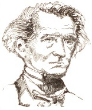

Hata denecek derecede romantik olan Hector Berlioz (1803-1869), benmerkezci ve sürekli olarak âşıktı. Çalkantılı hayatı, yazdığı müziğe mükemmel bir eşlikçiydi.

Fransa, Grenoble’un dışında ılımlı bir ailede doğan Berlioz’un doktor babası onu Paris’te tıp fakültesine yolladı. Orada konserlere giderek ve müzisyenlerle takılarak, romantizm ruhuyla savruldu. Dindar ve becerikli annesinin ısrarlarına karşın Berlioz eğitimini yarıda bıraktı ve Paris Konservatuarı’na girdi.
1827’de Berlioz, hayatını değiştiren, Shakespeare’in Hamlet oyununun bir gösterisine gitti. Ophelia başrolünü oynayan İrlandalı kadın oyuncu Harriet Smithson’a deli gibi âşık oldu ve çılgınca kur yapmaya başladı. Smithson, Berlioz’un tekliflerini reddettiği zaman, onu müziği ile kazanmaya karar verdi. Sonuç, on dokuzuncu yüzyılın en önemli eserlerinden biri olan Fantastik Senfoni (1830) yapıtıydı.
Eser, güzel bir hizmetçiye vurulmuş, afyonu aşırı doz alarak intihar etmeye çalışan genç, hırslı bir bestecinin hikâyesini anlatır. Hemen ölmek yerine, parçanın beş bölümüyle çakışan beş yoğun halüsinasyona yuvarlanır: Önce aşkıyla karşılaşır ve arzuyla baştan çıkar; sonra bir baloda onu dans ederken görür; daha sonra bir çayırda sessiz bir sahne gelir; sonra sevdiğini öldürür ve giyotinle idam edilir; sonunda bestecinin vücudu, ölü aşkının iğrenç bir şekilde tekrar göründüğü cadıların Sebt gününde ölü için söylenen ortaçağ şarkısı “Dies Irae”ye eşlik ederek çalkalanır.
Fantastik Senfoni’de, her bölümünde yeni müzikal biçimlerde tekrarlanan, sevileni temsil eden basit, cezbedici bir melodi esasına dayanan, devrim niteliğindeki idée fixe tekniği kullanılır. Berlioz’un Harriet’in hayaline saplantılı olduğu ölçüde senfonisi de bu temaya saplantılıdır. Yıllar sonra nihayet, Berlioz hercai Harriet ile evlendi. Fakat soğumuş, geç kalmış aşkları uzun sürmedi.
EK BİLGİLER:
1. Berlioz’un Paris Konservatuarı’ndaki öğretmeni Jean-François Lesueur (1760-1837), kendisine onun bir dâhi olduğunu söyledi. Berlioz, hiçbir zaman bunu unutmadı. Günahkâr içgüdülerini devasa ölçekte, pahalı prodüksiyonlarda beste yapma konusunda cesaretlendiren şey, muhtemelen buydu. 1844’de Paris’te 1.000’den fazla müzisyenin olduğu ve yedi asistan şef gerektiren dev bir orkestra koro topluluğunu yönetti.
2. Kendi kendine gitar ve flüt öğrenmenin haricinde Berlioz, enstrümantal yetenekten yoksundu. Korkunç bir piyanistti ve kemanı ya da bestecilerin bilinen diğer enstrümanlarından herhangi birini çalamıyordu.
3. Paris Konservatuarı’nın talepkâr, muhafazakâr standartları ile sürekli arası açık olan Berlioz, oraya bir iş için başvurdu ama defalarca reddedildi. Yaşamının çoğunda Paris gazeteleri ve dergilerinde yazarak geçindi. Yetenekli bir yazardı ve makalelerinin çoğu bugüne ulaşmayı başardı.